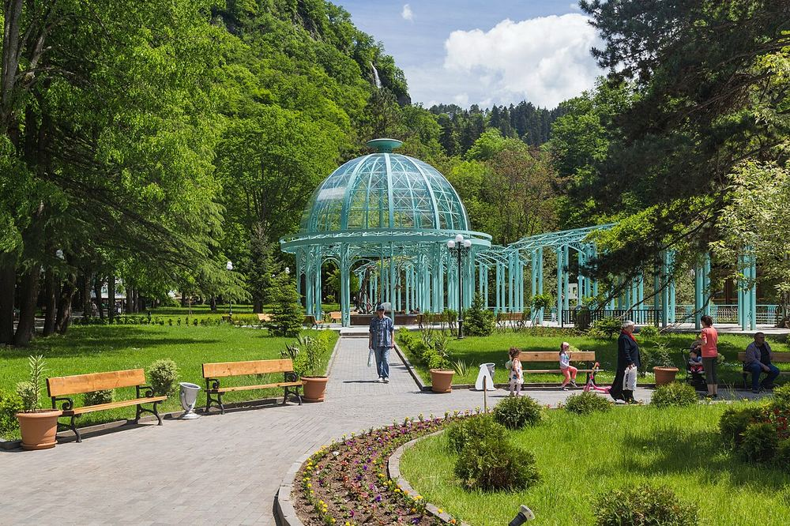

הפארק המרכזי של בורג'ומי: רכבל, גלגל ענק, מגרש משחקים ופארק חבלים
4.5/5 Google · 15,749- שעות
- גוגל: מדי יום 9:00–20:00. בתי הקפה, לונה פארק, הרכבל והגלגל הענק פועלים בעיקר מסוף יוני עד תחילת ספטמבר (רכבל בערך 10:00–20:00; מבקר אחד ב-2025 מצא את הרכבל סגור, לכן לוודא שהוא פועל). יום ג' 17 באוגוסט (יום חול שקט); הליכה ראשונה קצרה שם ביום ב' 16 באוגוסט.
- מחיר למשפחה
- כ-140 לארי (כ-46 €), הערכה: כניסה כ-5 לארי לאדם = 20 לארי, רכבל 15 לארי בכיוון אחד לאדם (יורדים ברגל בחינם) = 60 לארי, גלגל ענק כ-20 לארי (המחיר לא נמצא), ועוד כ-40 לארי לניסיון בפארק החבלים או בקו ההחלקה (בתשלום נפרד, מחיר לא נמצא). מעיין המים המינרליים ומגרש המשחקים חינם. הערכה
- זמן
- 3–4 שעות (שבילים שטוחים ומוצלים; הפארק ארוך, כך שאפשר להסתפק במגרש המשחקים ובמעיין ליד הכניסה)
פארק עמק מוצל לאורך נהר: ביתן מים מינרליים (חמימים, מלוחים ועם ריח גופרית קל: רק לגימה), מגרשי משחקים, רכבל לגלגל ענק, מתקני ילדים, ופארק חבלים וקו החלקה (המדריכים מציינים אותם; רק בקיץ, מגבלות גיל/גובה לא נמצאו: לשאול בקופה). מבקרים כותבים שחלק מהמתקנים עלולים להיות סגורים או ישנים, ו-Lonely Planet מתאר את המתקנים כצנועים, ולכן לא לצפות ליותר מדי. המקום הקריר ביותר ביום בטיול.
ניווט · Google Maps · Madloba – Borjomi cable car · GoTrip – what to see in Borjomi (park, cable car, pools)